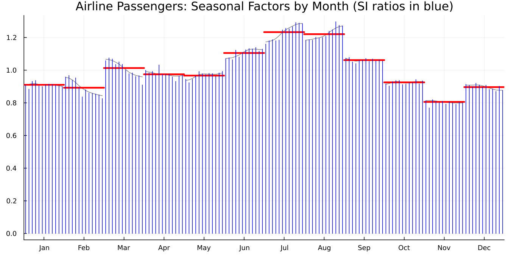
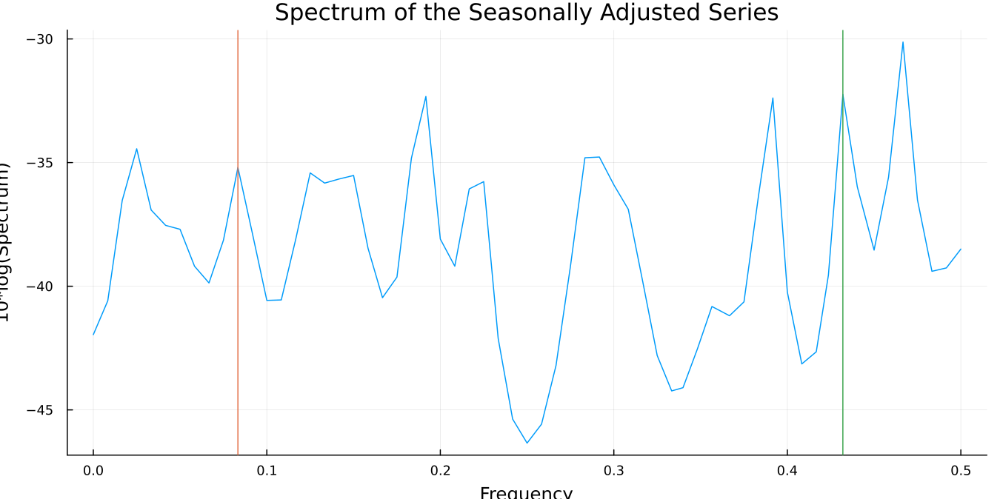
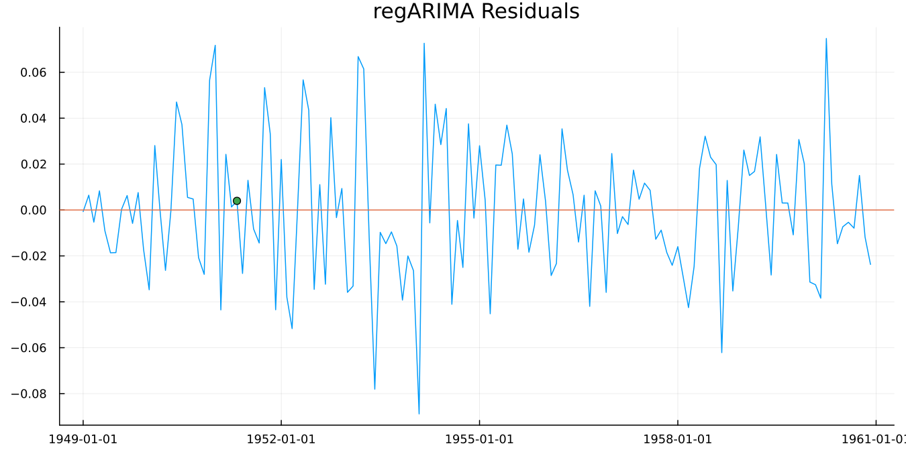

3. Was It Any Good?
Seasonal adjustment fails quietly. There's no error, no warning, no obviously wrong number. You get a smooth line that looks like an adjusted series, and it may be wrong in ways that matter.
So there's a battery of diagnostics, and it's unusually large compared with most statistical procedures. This chapter runs the five checks worth making every time, in the order worth making them — against a fuller specification than chapter 2's bare call, one that actually lets X-13 make its usual automatic choices:
res = x13(dataset("airline");
automdl = true,
outlier = true,
aictest = [:td, :easter],
transform = :auto)This is the specification behind every verified number in this chapter and the next.
Check 1: does the seasonal pattern look sensible?
monthplot(res)
Figure 3.1. Twelve bands, one per calendar month. The thick horizontal bar in each band is the estimated seasonal factor. The vertical stems are the SI ratios, which are what the data actually showed in each individual year before smoothing.
Read it this way. The bars tell you the shape of the average year: July and August well above 1.0, February well below. The stems tell you how much year-to-year variation the bar is smoothing through. Tight stems mean a stable seasonal pattern that's easy to estimate. Widely scattered stems mean the pattern is moving, and the single bar is a compromise.
The stems drifting steadily in one direction within a band is the signal to watch for. It means that month's seasonal effect is changing over time, and a single factor is hiding a trend.
Check 2: is there seasonality left?
The point of the exercise is to remove the seasonal pattern. The QS test asks whether any remains.
qs(res)| Series | QS statistic | p-value |
|---|---|---|
| original | 167.65 | 0.000 |
| seasonally adjusted | 0.00 | 1.000 |
That's the pattern to want. Strong, highly significant seasonality in the input. None detectable in the output.
The failure mode is a significant QS on the adjusted series. It means the procedure didn't get everything, and the adjusted figures still contain a calendar rhythm. On monthly economic data that's a publication-blocking result at most statistical offices.
Check 3: the M statistics
X-11 produces eleven summary statistics, M1 to M11, and combines them into an overall Q. Each M targets a different way an adjustment can go wrong: too much irregular relative to trend, seasonal factors moving too fast, and so on.
The convention is simple. Below 1.0 passes. Above 1.0 fails.
m = mstats(res)
m.q, m.m7, m.fail(0.20, 0.203, 0)Q of 0.20 against a threshold of 1.0 is a comfortable pass. fail is the count of individual M statistics that exceeded 1.0, and zero is what you want.
M7 deserves separate attention. It tests whether identifiable seasonality is present at all, and it's the one most practitioners quote. An M7 above 1.0 is often taken to mean the series shouldn't be seasonally adjusted, because there's not enough stable seasonality there to remove. At 0.203, this series has plenty.
mstats returns all eleven plus q, qm2 and fail. It returns nothing for a SEATS run, since the M statistics are specific to X-11.
Check 4: spectral peaks
A seasonal pattern in monthly data shows up as peaks at particular frequencies. If those peaks are still in the adjusted series, seasonality survived.
spectrumplot(res; series = :sa)
Figure 3.2. The spectrum of the adjusted series, with vertical markers at any seasonal or trading-day frequency X-13 flagged as a visually significant peak. A clean adjustment has no markers at the seasonal frequencies.
For a summary rather than a picture:
spectral_peaks(res)spectral_peaks tells you which series show peaks. spectrum_peaks (singular spectrum, note) tells you at which frequency, which is the finer information the plot uses.
A trading-day peak is a different message from a seasonal one. It says the series responds to the day-of-week composition of the month, and chapter 4 shows how to model it.
Check 5: is the model adequate?
The regARIMA model at the front of the pipeline has its own diagnostics, and they're ordinary time series diagnostics.
residplot(res)
Figure 3.3. Residuals against time, with a zero reference line. You are looking for something that resembles noise: no drift, no fanning out, no runs of same-signed values.
d = residual_diagnostics(res)
d.durbin_watson, d.skewness, d.kurtosis(1.9504, 0.0900, 3.0698)Durbin-Watson near 2.0 indicates no first-order residual autocorrelation. Skewness near 0 and kurtosis near 3 are what a normal distribution gives, so these residuals are close to normal.
d.ljung_box is the full lag-indexed table rather than a single number, because the underlying diagnostic is computed at several lags and the answer can differ between them.
The checklist
| Check | Function | Want |
|---|---|---|
| Sensible seasonal pattern | monthplot | tight stems, no drift within a band |
| Seasonality removed | qs | significant on original, not on adjusted |
| Overall quality | mstats | Q below 1.0, fail of 0 |
| No residual seasonality | spectral_peaks | no seasonal peak in :sa |
| Model adequate | residual_diagnostics | DW near 2, no Ljung-Box rejection |
Two more exist and are worth knowing about even though they're beyond this guide. seasonality_tests gives the stable and moving seasonality F-tests and the identifiable-seasonality verdict. slidingspans/revision_history ask a different question again: not whether the adjustment is right today, but whether it will still look like this next month (see chapter 5).
When a check fails
Do not reach for a different method. Reach for the specification.
A failed QS on the adjusted series, or a seasonal spectral peak, usually means the model in front of the filter is missing something. An outlier, a calendar effect, a level shift. Those are chapter 4.